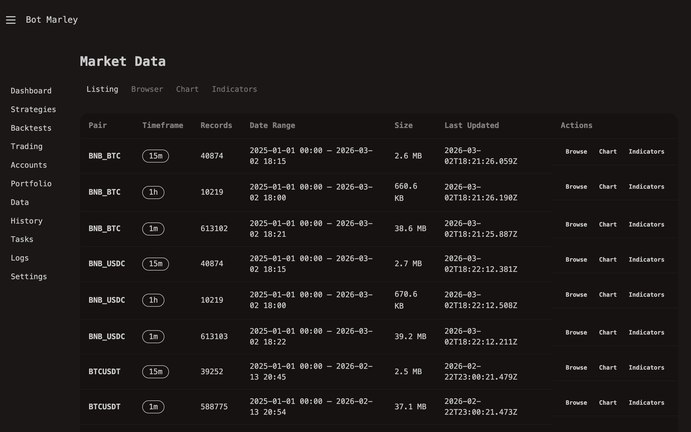

Market Data Overview
Market data is the foundation of everything Botmarley does. Every backtest, every live trading session, and every chart you view depends on accurate, well-organized historical price data. This chapter explains what market data is, how Botmarley stores it, and how data flows through the system.
What Is Market Data?
Market data in Botmarley means OHLCV candles -- structured snapshots of price activity over a fixed time period. Each candle captures five values:
| Field | Meaning | Example |
|---|---|---|
| Open | The price at the start of the period | 67,250.00 |
| High | The highest price during the period | 67,410.50 |
| Low | The lowest price during the period | 67,180.00 |
| Close | The price at the end of the period | 67,390.25 |
| Volume | The total amount traded during the period | 42.37 BTC |
A single candle tells you a story: where the price started, how far it moved in each direction, and where it ended up. Thousands of candles together reveal trends, patterns, and opportunities that strategies can exploit.
Botmarley always fetches and stores 1-minute candles as the base resolution. Larger timeframes (5m, 15m, 1h) are derived automatically by aggregating the 1-minute data. This means you only need to download once, and all timeframes are available immediately.
How Botmarley Stores Data
Botmarley stores candle data in Apache Arrow format -- a columnar, binary file format designed for high-performance analytics. Each trading pair gets its own directory with .arrow files inside.
~/.botmarley/data/
├── XBTUSD/
│ └── 1m.arrow ← all 1-minute candles for BTC/USD
├── ETHUSD/
│ └── 1m.arrow
├── SOLUSD/
│ └── 1m.arrow
└── ...
Why Apache Arrow?
You might wonder why Botmarley does not just use CSV or JSON files like many other tools. The answer comes down to performance and efficiency:
| Property | Arrow | CSV | JSON |
|---|---|---|---|
| Read speed | Extremely fast (memory-mapped) | Slow (must parse every line) | Slowest (must parse structure) |
| File size | Compact binary | Medium (text) | Large (text + keys) |
| Type safety | Columns are typed (f64, i64, timestamp) | Everything is a string | Mixed types |
| Column access | Read only the columns you need | Must read entire rows | Must read entire objects |
| Ideal for | Time-series data, analytics | Simple data exchange | API responses |
Arrow's columnar layout means that when Botmarley needs to calculate an indicator like EMA (which only requires the "close" column), it can read just that column without touching open, high, low, or volume data. For a dataset with millions of candles, this makes a significant difference.
You never need to interact with Arrow files directly. Botmarley handles reading and writing through the web interface and its internal engine. The files are mentioned here so you understand what is on disk and why.
Data Flow
Here is how market data moves through the system, from the exchange to your screen:
flowchart LR
Exchange["Exchange REST API<br/>(Kraken or Binance)"] -->|"Fetch 1m candles"| Download["History Sync<br/>(Task Queue)"]
Download -->|"Write .arrow"| Disk["Arrow Files<br/>~/.botmarley/data/"]
Disk -->|"Read"| Backtest["Backtest Engine"]
Disk -->|"Read"| Browser["Data Browser<br/>& Chart Viewer"]
Disk -->|"Read"| Indicators["Indicator<br/>Calculator"]
Disk -->|"Seed history"| Live["Live Trading<br/>Engine"]
Exchange -->|"WebSocket feed"| Live
style Exchange fill:#5865f2,color:#fff
style Disk fill:#f59e0b,color:#fff
- Fetch -- The History Sync page lets you download candles from either Kraken's or Binance's REST API. Botmarley fetches 1-minute candles going as far back as you configure.
- Store -- Downloaded candles are written to
.arrowfiles on disk, organized by trading pair. - Use -- Stored data is consumed by multiple parts of the system:
- Backtest engine reads Arrow files to simulate strategy execution against historical prices.
- Data browser renders candles in tables and interactive charts.
- Indicator calculator reads price data and computes technical indicators.
- Live trading engine loads recent history from Arrow files as a starting seed, then switches to a WebSocket feed for real-time data.
Data Freshness
When you download history for a pair, Botmarley records the last timestamp stored. The next time you sync that pair, it resumes from where it left off -- no duplicate downloads, no gaps. This incremental approach means:
- First sync may take a while (months of 1-minute candles add up).
- Subsequent syncs are fast -- only new candles since the last sync are fetched.
Botmarley does not automatically keep historical data up to date. You need to trigger a History Sync manually or set it up before running a backtest on recent data. Live trading sessions handle their own real-time data via WebSocket and do not depend on Arrow files being current.

What's Next
- Downloading History -- how to fetch candle data from Kraken or Binance.
- Data Browser -- view and chart your stored data.
- Indicator Calculator -- run technical indicators on your data.